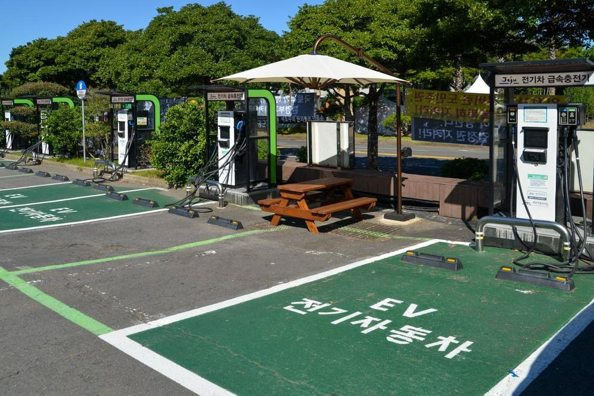
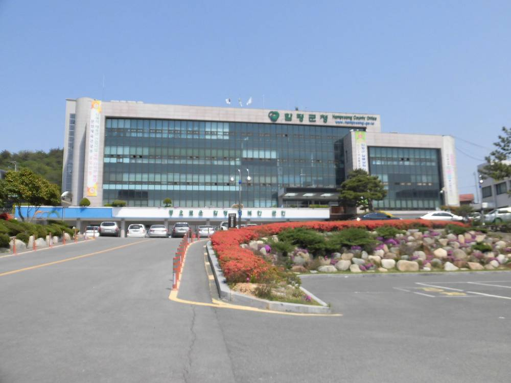
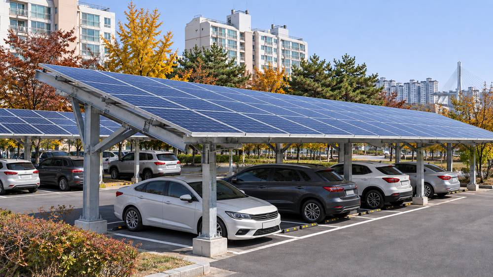
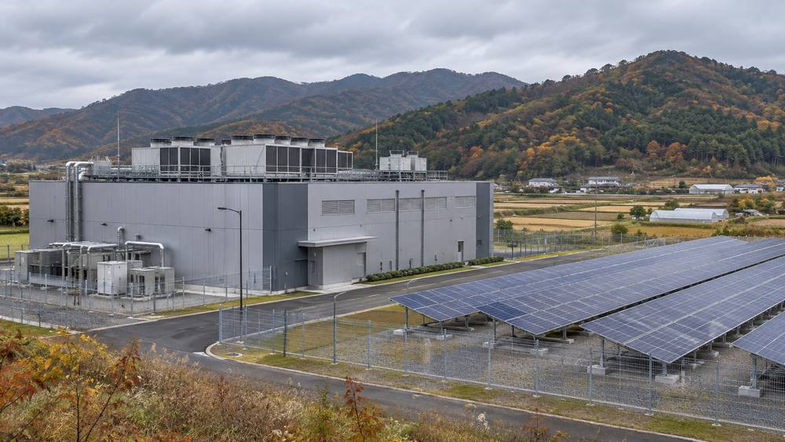

오피니언
"싸고 빠른 발전소는 수요 속에 있다"…전력수요 100GW 시대, 저녁엔 줄이고 낮엔 늘리는 '부하이전' 키우자
우종률 고려대 에너지환경대학원 교수 기고…12차 전기본 수요관리 목표 20.8GW를 실제 자원으로 만들 세 가지 조건

"8GW 재생에너지 기지로 함평 100년 열자"…함평군번영회장, 햇빛연금·345kV 변전소 유치 등 4대 과제 제안
오민수 함평군번영회장 겸 사회단체협의회장 군민 기고문…"함평에서 만든 전기, 기업 이익으로만 가선 안 돼"

"반도체 기다리는 동안 재생에너지 일감으로 지역 기업 살려야"…전남광주 에너지공사 서둘러 세우자는 제안
이순형 동신대 특임교수 기고…50GW 더 깔 재생에너지 투자 250조 원 추산, 연도별 발주 시간표·지역 공동도급·인력 양성 주문

"송전탑 아래 주민도 '모두'에 들어가야"…새만금~신서산 345kV 송전선 앞둔 충남 서천·보령
약 99㎞ 초고압 선로 2034년 12월 준공 목표…사설 "노선 정하기 전에 주민을 테이블에, 마을 가까운 구간 지중화·보상 현실화"

"공영주차장 태양광, 시민이 소유·운영하는 사업 돼야"…인천 환경단체, 공모지침에 시민 지분율 넣자 제안
인천시 후보지 91곳·iH 40MW 구상…"수익 나눠 받는 데 그치지 말고 시민이 발전소 주인으로"

시민 토론 참여자 95% "데이터센터, 재생에너지·지역 분산 조건 붙여야"…무조건 찬성은 1건
기후아고라 3주 온라인 토론 의견 62건 분석…조건부 찬성 38건, 대안·검토 20건, 반대 2건

"햇빛소득마을 3,000곳의 30배"…황우현 교수, 전국 동·리 10만 곳 '자립형 에너지 타운' 제안
타운마다 1MW씩 2035년 100GW…"5,700세대 단지 검토서 자립률 최대 80%, 가구당 연 60만~100만 원 수익공유"

オピニオン
「安くて速い発電所は需要の中にある」…電力需要100GW時代、夕方は減らし昼は増やす「負荷移動」を育てよう
ウ・ジョンリュル高麗大学エネルギー環境大学院教授が寄稿…第12次電力需給基本計画の需要管理目標20.8GWを実際の資源にする3つの条件
「8GWの再エネ拠点で咸平の100年を開こう」…咸平郡繁栄会長、ひだまり年金・345kV変電所誘致など4大課題を提案
オ・ミンス咸平郡繁栄会長兼社会団体協議会長が郡民向け寄稿…「咸平で作った電気が企業の利益だけになってはならない」
「半導体を待つ間、再エネの仕事で地元企業を生かすべき」…全南光州エネルギー公社の早期設立を提案
李舜衡・東新大特任教授が寄稿…50GW追加の再エネ投資は250兆ウォンと推計、年度別発注スケジュール・地域共同受注・人材育成を求める
「送電塔の下の住民も『みんな』に入るべき」…セマングム～新瑞山345kV送電線控える忠清南道舒川・保寧
約99㎞の超高圧線路、2034年12月竣工目標…社説「ルート決定前に住民を交渉の席に、集落近くは地中化・補償の現実化を」
「日差し所得村3,000カ所の30倍」…黄祐鉉教授、全国の洞・里10万カ所に「自立型エネルギータウン」を提案
タウンごとに1MW、2035年に100GW…「5,700世帯団地の検討で自立率最大80%、世帯あたり年60万〜100万ウォンの収益共有」
评论
“便宜又快的电厂就在需求之中”…电力需求100GW时代，应发展晚间少用、白天多用的“负荷转移”
高丽大学能源环境研究生院教授禹钟律撰文：让第12次电力供需基本计划需求管理目标20.8GW成为真正资源的三个条件
"以8GW可再生能源基地开启咸平未来百年"…咸平郡繁荣会会长提出阳光年金、引进345kV变电站等四大课题
吴敏洙咸平郡繁荣会会长兼社会团体协议会会长致郡民文章："咸平生产的电不能只变成企业利润"
"等待半导体期间，先用可再生能源订单救活本地企业"…建议尽快设立全南光州能源公社
东新大学特任教授李舜衡投稿：新增50GW可再生能源投资估计250万亿韩元，呼吁公布年度发包时间表、扩大地方联合承包、培养人才
"输电塔下的居民也应包括在'所有人'之中"…新万金至新瑞山345kV输电线路牵动忠清南道舒川、保宁
约99公里超高压线路目标2034年12月竣工…社论：确定路线前让居民上桌，靠近村庄路段增加地下化、补偿要切合实际
“阳光收入村3,000个的30倍”…黄祐铉教授提议在全国10万个洞、里建设“自立型能源镇”
每镇1MW，2035年达100GW…“5,700户小区研究显示自给率最高80%，每户每年可分享60万至100万韩元收益”
Opinion
'The cheapest, fastest power plant lies in demand': expert urges load shifting for Korea's 100 GW era
Column by Korea University professor Woo Jong-ryul on three conditions for turning the 12th Basic Plan's 20.8 GW demand-management target into a real resource
"Open Hampyeong's next century with an 8 GW renewable hub": civic leader proposes sunlight pension and 345 kV substation
Oh Min-su, head of the Hampyeong County Prosperity Association, writes to residents: "Electricity made in Hampyeong must not become corporate profit alone"
"Use renewable work to keep local firms alive while waiting for chip fabs": call to fast-track a Jeonnam-Gwangju energy corporation
Dongshin University professor Lee Soon-hyung estimates 250 trillion won for 50 GW of new renewables, urges yearly tender schedules, local joint contracting and workforce training
"Residents under transmission towers must count too": Seocheon and Boryeong brace for Saemangeum–Sinseosan 345 kV line
Roughly 99 km ultra-high-voltage line targeted for December 2034; editorial urges a seat at the table before routing, more undergrounding and realistic compensation
"Public car-park solar should be owned and run by citizens": Incheon environmental group urges citizen-equity criteria in tenders
Incheon has 91 candidate sites and iH plans 40MW; "citizens should own the plants, not just share the profits"
95% of citizen forum participants say data centres must come with renewable and regional conditions; only one backed them unconditionally
Analysis of 62 comments from a three-week Climate Agora debate: 38 conditional yes, 20 calling for alternatives or review, 2 opposed
'30 times the 3,000 sunlight income villages': professor proposes 100,000 self-reliant energy towns across Korea
1MW per town for 100GW by 2035; review of a 5,700-household complex shows up to 80% self-sufficiency and 600,000 to 1 million won a year per household